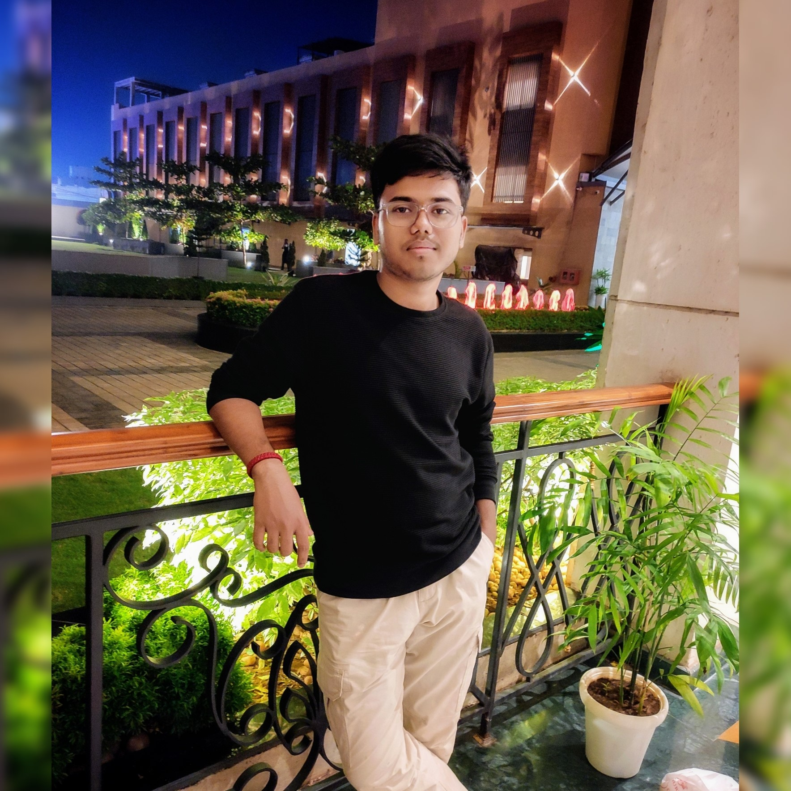

Biraja Prasad Nayak
Roll No.: 2230247
B-TECH in Electronics and Computer Science
Kalinga Institute of Industrial Technology
Education
- Kalinga Institute of Industrial Technology
B-Tech in Electronics and Computer Science
2026 (Expected)
(CGPA: 8.03) - Kendriya Vidyalaya, Jajpur
Senior Secondary
76% (2022)
(CBSE) - Happy Home School, Bhadrak
Secondary
74.6% (2020)
(ICSE)
Experience
- Pankh, Kalakaar (KIIT Society)
Video Editor and Graphics Designer (2023 - Present)- Video Editing - Produced high-quality videos using Adobe Premiere Pro and After Effects.
- Graphic Design - Created engaging social media posts.
Personal Projects
- Bus Crew Management - Developing a responsive management website for local buses.
- Portfolio Website - Designed a personal portfolio showcasing skills and projects.
Technical Skills
- Programming Languages: C, Python, HTML, CSS, JavaScript
- Developer Tools: Git
- Frameworks: React, Flask, Node.js
- Database: MySQL
Non-Technical Skills
- Skills: Video Editing, Graphic Design, UI/UX Design
Achievements
- Responsive Web Design - Certification from FreeCodeCamp
- Flask Basics - Certification from Cursa App
- MySQL Fundamentals - Certification from Scaler